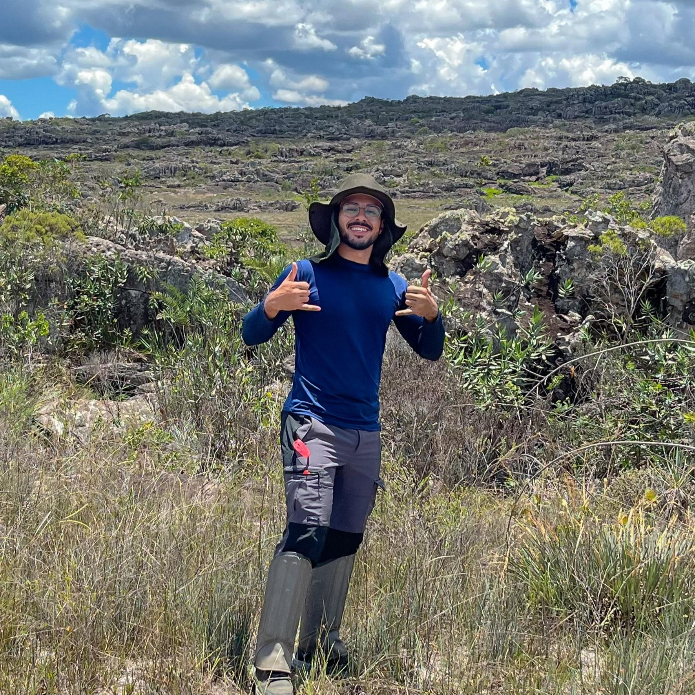
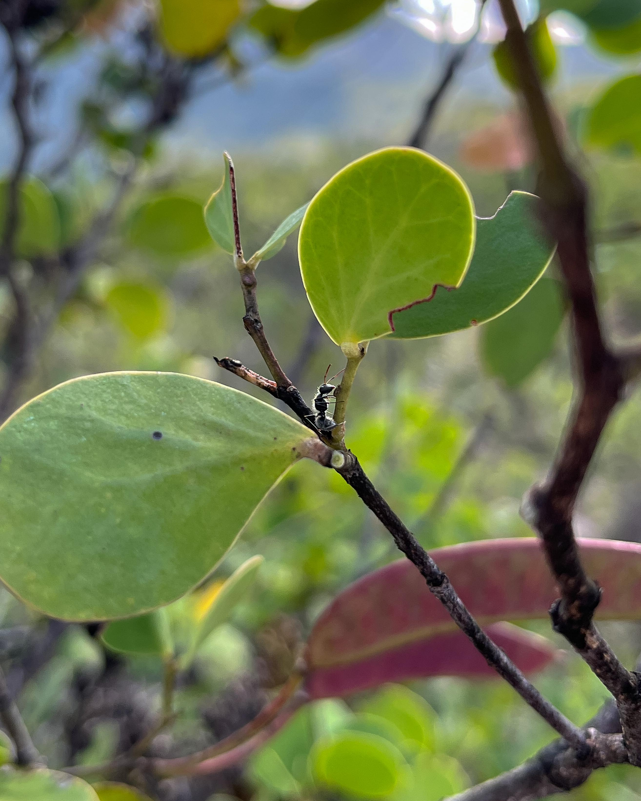

Matheus Siqueira
Mestrado pelo Programa de Biodiversidade Vegetal e Meio Ambiente — Instituto de Pesquisas Ambientais (IPA)
- Néctar extrafloral
- Mutualismo planta-formiga
- Ecofisiologia vegetal
Sobre
Seu projeto investigou os efeitos da luz e do sombreamento na secreção de carboidratos não-estruturais (CNEs) pelo néctar extrafloral e sua concentração nas folhas de Chamaecrista nictitans. O projeto visou responder o quanto o investimento da espécie em seu mutualismo pode ser suscetível a mudanças ambientais locais.
Graduado em Ciências Biológicas pela UNIP (2023), iniciou sua trajetória científica com iniciação científica em taxonomia de microalgas, migrando depois para interações planta-animal atraído pela interdisciplinaridade da área, que reúne ecologia, fisiologia vegetal e entomologia em torno de uma mesma pergunta. Tem interesse em entender melhor a ecofisiologia de espécies de Chamaecrista e como esses padrões variam entre espécies e populações.

